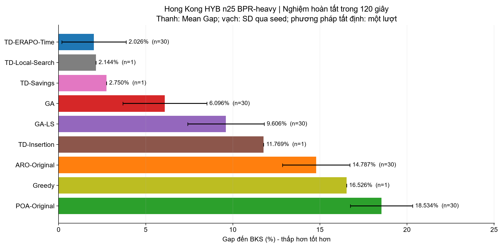
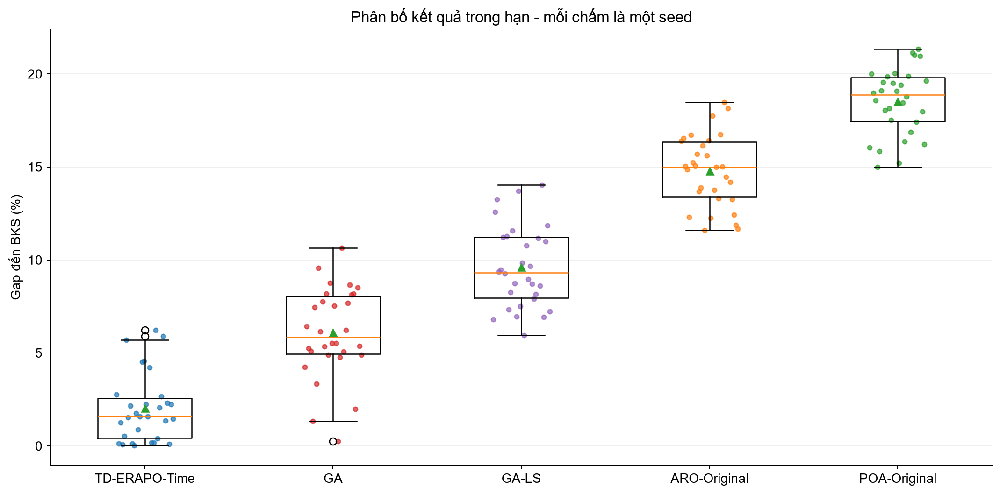
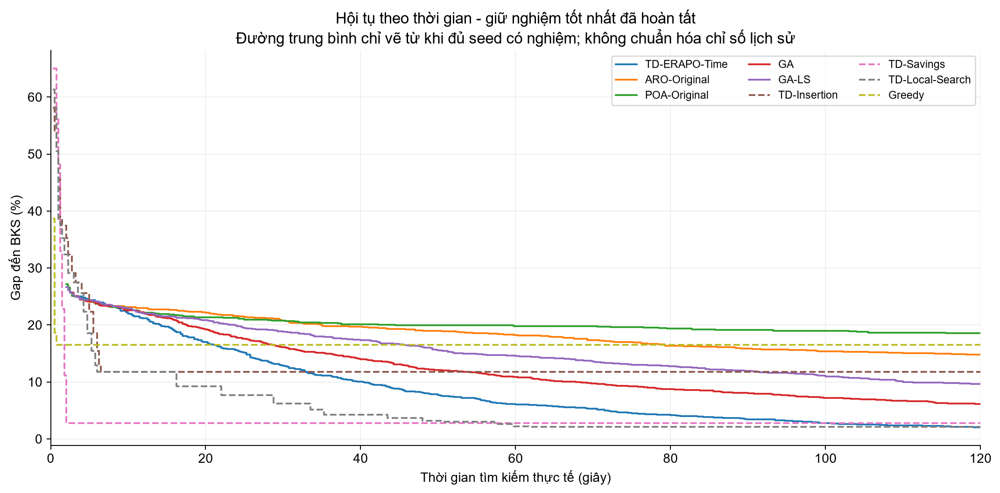
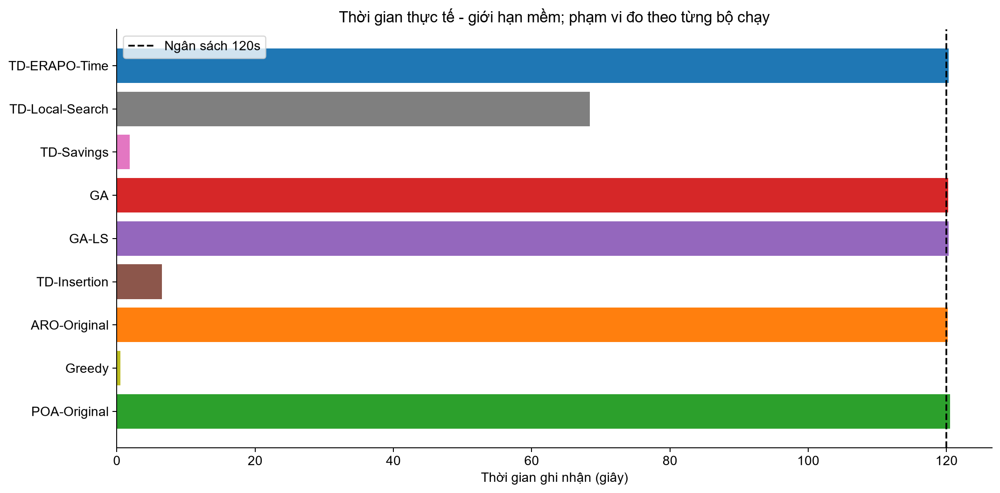
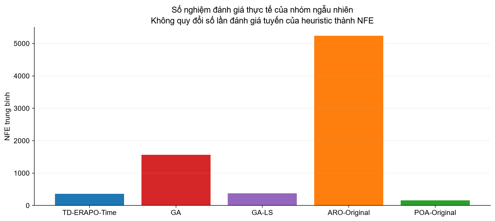
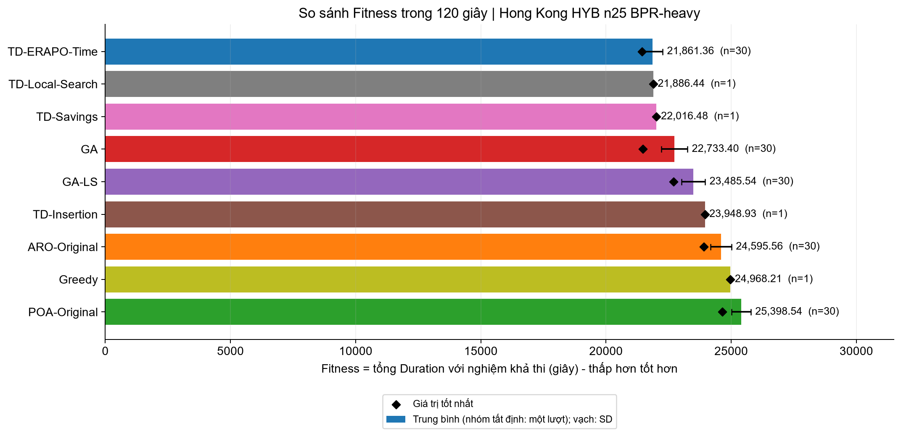

Đủ 154 lượt hợp lệ. Có 3 lượt cải thiện sau hạn; hình và bảng chính dùng nghiệm hoàn tất trong 120 giây. Nhóm ngẫu nhiên: 30 seed; phương pháp tất định: 1 lượt, không tính SD giả. NFE không phải ngân sách dừng của đợt này. Thời gian nạp dữ liệu được loại khỏi đồng hồ tìm kiếm; xử lý cuối có thể làm runtime vượt hạn. Các phương pháp có phạm vi đo xử lý cuối khác nhau, không diễn giải chênh lệch nhỏ của runtime là ưu thế thuật toán.
| Thuật toán | Số lượt | Best Duration | Mean Duration | SD | Mean Gap (%) | Giây ghi nhận |
|---|---|---|---|---|---|---|
| TD-ERAPO-Time | 30 | 21,433.25 | 21,861.36 | 395.23 | 2.026 | 120.33 |
| TD-Local-Search | 1 | 21,886.44 | 21,886.44 | — | 2.144 | 68.39 |
| TD-Savings | 1 | 22,016.48 | 22,016.48 | — | 2.750 | 1.89 |
| GA | 30 | 21,479.58 | 22,733.40 | 516.67 | 6.096 | 120.23 |
| GA-LS | 30 | 22,705.29 | 23,485.54 | 469.90 | 9.606 | 120.29 |
| TD-Insertion | 1 | 23,948.93 | 23,948.93 | — | 11.769 | 6.49 |
| ARO-Original | 30 | 23,914.44 | 24,595.56 | 413.49 | 14.787 | 120.20 |
| Greedy | 1 | 24,968.21 | 24,968.21 | — | 16.526 | 0.52 |
| POA-Original | 30 | 24,640.51 | 25,398.54 | 381.83 | 18.534 | 120.54 |





